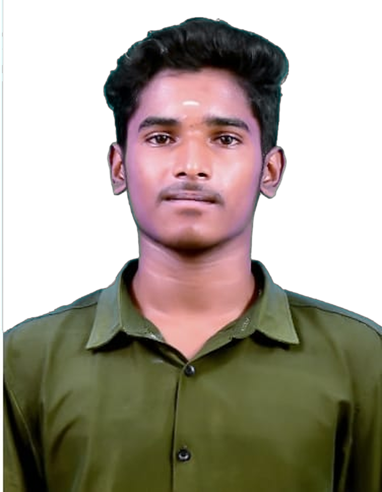

I build machine learning systems and defend them.
B.Tech student in AI and Machine Learning at Panimalar Engineering College, Chennai. I work across ML, MLOps and cybersecurity, from fraud detection and recommendation pipelines to causal intrusion prevention research.

Research
Structural-causal counterfactual recourse for real-time intrusion prevention in SDNs (C3-IPS)
Lead author, manuscript in preparation with Sriram D, Rahul P and Sujay Prasanna S. I built a structural causal model of network telemetry (17 variables, 21 edges) and a constrained counterfactual engine that compiles its recourse into OpenFlow FlowMod and MeterMod rules.
Projects
Voyage Analytics and Recommendation Engine
A personalised travel recommendation engine with an end-to-end MLOps pipeline. Automating training through deployment cut manual operational effort by 40%.
CyberShield AI
Network anomaly and threat tracking that passes traffic captures through machine learning and flags malicious activity with Isolation Forests.
CausalShield
A hackathon project built with a team of four: an agent-based approach to improving the resilience of smart-factory cyber-physical systems.
FinTech Fraud Detection and Analysis
Anomaly detection on large financial datasets (PhonePe, Paisabazar) to flag irregular transactions, improving fraud identification and reducing false positives.
Vulnerability Assessment and Risk Management
Assessed vulnerabilities in a Linux and MySQL environment, quantified risk with NIST SP 800-30 and documented controls including MFA and RBAC.
Security Log Analysis and Threat Detection
SQL queries that filter large log datasets to find anomalous logins and out-of-hours access.
Experience
AI/ML Intern, Labmentix
- Built and deployed AI analytics solutions for FinTech, E-commerce and Real Estate use cases.
- Developed predictive models with LSTM networks, K-Means clustering and sentiment analysis to forecast trends.
- Integrated automated CI/CD pipelines for model deployment, reducing manual work and improving reproducibility.
B.Tech, Artificial Intelligence and Machine Learning
- Panimalar Engineering College, Chennai. CGPA 8.64 / 10.
Skills
Programming
Python, SQL, Bash, Flask, Streamlit
Machine learning
TensorFlow, Keras, Scikit-learn, NLP (NLTK, spaCy), LLMs, time-series forecasting, causal modelling
Engineering
CI/CD pipelines, model deployment, MLOps, Linux administration, Git
Security and systems
Threat modelling, intrusion detection (Suricata), SIEM (Chronicle, Splunk), TCP/IP, DNS, SSL/TLS
Certificates

Google AI Professional Certificate
Seven courses: AI fundamentals, research, writing, data analysis and app building.
Verify on Coursera
Google Cybersecurity Professional Certificate
Nine courses: Linux and SQL, SIEM tools, intrusion detection, risk management, Python automation.
Verify on Coursera
Computer Networks and Network Security
Network fundamentals and the security of networked systems.
Verify on Coursera
Generative AI for Growth Marketing
Three-course specialization: generative AI basics, prompt engineering and AI-driven strategy.
Verify on Coursera